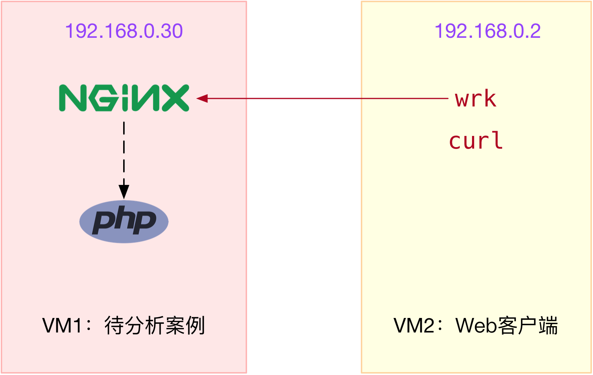
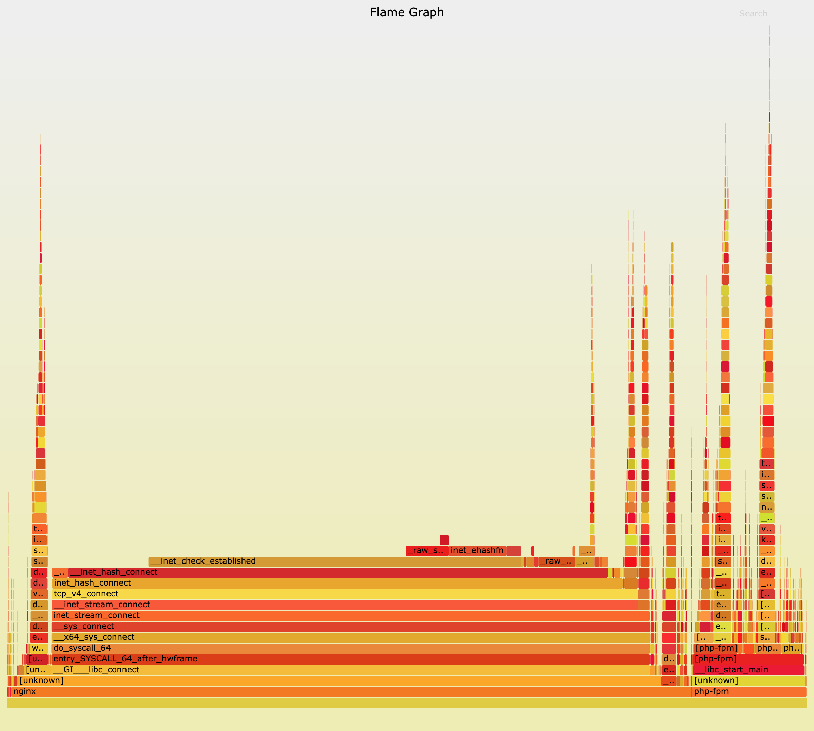

- 00 开篇词 别再让Linux性能问题成为你的绊脚石.md.html
- 01 如何学习Linux性能优化？.md.html
- 02 基础篇：到底应该怎么理解“平均负载”？.md.html
- 03 基础篇：经常说的 CPU 上下文切换是什么意思？（上）.md.html
- 04 基础篇：经常说的 CPU 上下文切换是什么意思？（下）.md.html
- 05 基础篇：某个应用的CPU使用率居然达到100%，我该怎么办？.md.html
- 06 案例篇：系统的 CPU 使用率很高，但为啥却找不到高 CPU 的应用？.md.html
- 07 案例篇：系统中出现大量不可中断进程和僵尸进程怎么办？（上）.md.html
- 08 案例篇：系统中出现大量不可中断进程和僵尸进程怎么办？（下）.md.html
- 09 基础篇：怎么理解Linux软中断？.md.html
- 10 案例篇：系统的软中断CPU使用率升高，我该怎么办？.md.html
- 11 套路篇：如何迅速分析出系统CPU的瓶颈在哪里？.md.html
- 12 套路篇：CPU 性能优化的几个思路.md.html
- 13 答疑（一）：无法模拟出 RES 中断的问题，怎么办？.md.html
- 14 答疑（二）：如何用perf工具分析Java程序？.md.html
- 15 基础篇：Linux内存是怎么工作的？.md.html
- 16 基础篇：怎么理解内存中的Buffer和Cache？.md.html
- 17 案例篇：如何利用系统缓存优化程序的运行效率？.md.html
- 18 案例篇：内存泄漏了，我该如何定位和处理？.md.html
- 19 案例篇：为什么系统的Swap变高了（上）.md.html
- 20 案例篇：为什么系统的Swap变高了？（下）.md.html
- 21 套路篇：如何“快准狠”找到系统内存的问题？.md.html
- 22 答疑（三）：文件系统与磁盘的区别是什么？.md.html
- 23 基础篇：Linux 文件系统是怎么工作的？.md.html
- 24 基础篇：Linux 磁盘I_O是怎么工作的（上）.md.html
- 25 基础篇：Linux 磁盘I_O是怎么工作的（下）.md.html
- 26 案例篇：如何找出狂打日志的“内鬼”？.md.html
- 27 案例篇：为什么我的磁盘I_O延迟很高？.md.html
- 28 案例篇：一个SQL查询要15秒，这是怎么回事？.md.html
- 29 案例篇：Redis响应严重延迟，如何解决？.md.html
- 30 套路篇：如何迅速分析出系统I_O的瓶颈在哪里？.md.html
- 31 套路篇：磁盘 I_O 性能优化的几个思路.md.html
- 32 答疑（四）：阻塞、非阻塞 I_O 与同步、异步 I_O 的区别和联系.md.html
- 33 关于 Linux 网络，你必须知道这些（上）.md.html
- 34 关于 Linux 网络，你必须知道这些（下）.md.html
- 35 基础篇：C10K 和 C1000K 回顾.md.html
- 36 套路篇：怎么评估系统的网络性能？.md.html
- 37 案例篇：DNS 解析时快时慢，我该怎么办？.md.html
- 38 案例篇：怎么使用 tcpdump 和 Wireshark 分析网络流量？.md.html
- 39 案例篇：怎么缓解 DDoS 攻击带来的性能下降问题？.md.html
- 40 案例篇：网络请求延迟变大了，我该怎么办？.md.html
- 41 案例篇：如何优化 NAT 性能？（上）.md.html
- 42 案例篇：如何优化 NAT 性能？（下）.md.html
- 43 套路篇：网络性能优化的几个思路（上）.md.html
- 44 套路篇：网络性能优化的几个思路（下）.md.html
- 45 答疑（五）：网络收发过程中，缓冲区位置在哪里？.md.html
- 46 案例篇：为什么应用容器化后，启动慢了很多？.md.html
- 47 案例篇：服务器总是时不时丢包，我该怎么办？（上）.md.html
- 48 案例篇：服务器总是时不时丢包，我该怎么办？（下）.md.html
- 49 案例篇：内核线程 CPU 利用率太高，我该怎么办？.md.html
- 50 案例篇：动态追踪怎么用？（上）.md.html
- 51 案例篇：动态追踪怎么用？（下）.md.html
- 52 案例篇：服务吞吐量下降很厉害，怎么分析？.md.html
- 53 套路篇：系统监控的综合思路.md.html
- 54 套路篇：应用监控的一般思路.md.html
- 55 套路篇：分析性能问题的一般步骤.md.html
- 56 套路篇：优化性能问题的一般方法.md.html
- 57 套路篇：Linux 性能工具速查.md.html
- 58 答疑（六）：容器冷启动如何性能分析？.md.html
- 加餐（一） 书单推荐：性能优化和Linux 系统原理.md.html
- 加餐（二） 书单推荐：网络原理和 Linux 内核实现.md.html
- 用户故事 “半路出家 ”，也要顺利拿下性能优化！.md.html
- 用户故事 运维和开发工程师们怎么说？.md.html
- 结束语 愿你攻克性能难关.md.html
- 捐赠
52 案例篇：服务吞吐量下降很厉害，怎么分析？
你好，我是倪朋飞。
上一节，我们一起学习了怎么使用动态追踪来观察应用程序和内核的行为。先简单来回顾一下。
所谓动态追踪，就是在系统或者应用程序还在正常运行的时候，通过内核中提供的探针，来动态追踪它们的行为，从而辅助排查出性能问题的瓶颈。
使用动态追踪，便可以在不修改代码也不重启服务的情况下，动态了解应用程序或者内核的行为。这对排查线上的问题、特别是不容易重现的问题尤其有效。
在 Linux 系统中，常见的动态追踪方法包括 ftrace、perf、eBPF/BCC 以及 SystemTap 等。
使用 perf 配合火焰图寻找热点函数，是一个比较通用的性能定位方法，在很多场景中都可以使用。
如果这仍满足不了你的要求，那么在新版的内核中，eBPF 和 BCC 是最灵活的动态追踪方法。
而在旧版本内核，特别是在 RHEL 系统中，由于 eBPF 支持受限，SystemTap 和 ftrace 往往是更好的选择。
在 网络请求延迟变大 的案例中，我带你一起分析了一个网络请求延迟增大的问题。当时我们分析知道，那是由于服务器端开启 TCP 的 Nagle 算法，而客户端却开启了延迟确认所导致的。
其实，除了延迟问题外，网络请求的吞吐量下降，是另一个常见的性能问题。那么，针对这种吞吐量下降问题，我们又该如何进行分析呢？
接下来，我就以最常用的反向代理服务器 Nginx 为例，带你一起看看，如何分析服务吞吐量下降的问题。
案例准备
今天的案例需要用到两台虚拟机，还是基于 Ubuntu 18.04，同样适用于其他的 Linux 系统。我使用的案例环境如下所示：
机器配置：2 CPU，8GB 内存。
预先安装 docker、curl、wrk、perf、FlameGraph 等工具，比如
# 安装必备docker、curl和perf
$ apt-get install -y docker.io curl build-essential linux-tools-common
# 安装火焰图工具
$ git clone https://github.com/brendangregg/FlameGraph
# 安装wrk
$ git clone https://github.com/wg/wrk
$ cd wrk && make && sudo cp wrk /usr/local/bin/
这些工具，我们在前面的案例中已经多次使用，这儿就不再重复。你可以打开两个终端，分别登录到这两台虚拟机中，并安装上述工具。
注意，以下所有命令都默认以 root 用户运行，如果你用普通用户身份登陆系统，请运行 sudo su root 命令切换到 root 用户。
到这里，准备工作就完成了。接下来，我们正式进入操作环节。
案例分析
我们今天要分析的案例是一个 Nginx + PHP 应用，它们的关系如下图所示：

其中，wrk 和 curl 是 Nginx 的客户端，而 PHP 应用则是一个简单的 Hello World：
<?php
echo "Hello World!"
?>
为了方便你运行，我已经把案例应用打包成了两个 Docker 镜像，并推送到 Docker Hub 中。你可以直接按照下面的步骤来运行它。
同时，为了分析方便，这两个容器都将运行在 host network 模式中。这样，我们就不用切换到容器的网络命名空间，而可以直接观察它们的套接字状态。
我们先在终端一中，执行下面的命令，启动 Nginx 应用，并监听在 80 端口。如果一切正常，你应该可以看到如下的输出：
$ docker run --name nginx --network host --privileged -itd feisky/nginx-tp
6477c607c13b37943234755a14987ffb3a31c33a7f04f75bb1c190e710bce19e
$ docker run --name phpfpm --network host --privileged -itd feisky/php-fpm-tp
09e0255159f0c8a647e22cd68bd097bec7efc48b21e5d91618ff29b882fa7c1f
然后，执行 docker ps 命令，查询容器的状态，你会发现，容器已经处于运行状态（Up）了：
$ docker ps
CONTAINER ID IMAGE COMMAND CREATED STATUS PORTS NAMES
09e0255159f0 feisky/php-fpm-tp "php-fpm -F --pid /o…" 28 seconds ago Up 27 seconds phpfpm
6477c607c13b feisky/nginx-tp "/init.sh" 29 seconds ago Up 28 seconds nginx
不过，从 docker ps 的输出，我们只能知道容器处于运行状态。至于 Nginx 能不能正常处理外部的请求，还需要我们进一步确认。
接着，切换到终端二中，执行下面的 curl 命令，进一步验证 Nginx 能否正常访问。如果你看到 “Hello World!” 的输出，说明 Nginx+PHP 的应用已经正常启动了：
$ curl http://192.168.0.30
Hello World!
提示：如果你看到不一样的结果，可以再次执行 docker ps -a 确认容器的状态，并执行 docker logs <容器名> 来查看容器日志，从而找出原因。
接下来，我们就来测试一下，案例中 Nginx 的吞吐量。
我们继续在终端二中，执行 wrk 命令，来测试 Nginx 的性能：
# 默认测试时间为10s，请求超时2s
$ wrk --latency -c 1000 http://192.168.0.30
Running 10s test @ http://192.168.0.30
2 threads and 1000 connections
Thread Stats Avg Stdev Max +/- Stdev
Latency 14.82ms 42.47ms 874.96ms 98.43%
Req/Sec 550.55 1.36k 5.70k 93.10%
Latency Distribution
50% 11.03ms
75% 15.90ms
90% 23.65ms
99% 215.03ms
1910 requests in 10.10s, 573.56KB read
Non-2xx or 3xx responses: 1910
Requests/sec: 189.10
Transfer/sec: 56.78KB
从 wrk 的结果中，你可以看到吞吐量（也就是每秒请求数）只有 189，并且所有 1910 个请求收到的都是异常响应（非 2xx 或 3xx）。这些数据显然表明，吞吐量太低了，并且请求处理都失败了。这是怎么回事呢？
根据 wrk 输出的统计结果，我们可以看到，总共传输的数据量只有 573 KB，那就肯定不会是带宽受限导致的。所以，我们应该从请求数的角度来分析。
分析请求数，特别是 HTTP 的请求数，有什么好思路吗？当然就要从 TCP 连接数入手。
连接数优化
要查看 TCP 连接数的汇总情况，首选工具自然是 ss 命令。为了观察 wrk 测试时发生的问题，我们在终端二中再次启动 wrk，并且把总的测试时间延长到 30 分钟：
# 测试时间30分钟
$ wrk --latency -c 1000 -d 1800 http://192.168.0.30
然后，回到终端一中，观察 TCP 连接数：
$ ss -s
Total: 177 (kernel 1565)
TCP: 1193 (estab 5, closed 1178, orphaned 0, synrecv 0, timewait 1178/0), ports 0
Transport Total IP IPv6
* 1565 - -
RAW 1 0 1
UDP 2 2 0
TCP 15 12 3
INET 18 14 4
FRAG 0 0 0
从这里看出，wrk 并发 1000 请求时，建立连接数只有 5，而 closed 和 timewait 状态的连接则有 1100 多 。其实从这儿你就可以发现两个问题：
一个是建立连接数太少了；
另一个是 timewait 状态连接太多了。
分析问题，自然要先从相对简单的下手。我们先来看第二个关于 timewait 的问题。在之前的 NAT 案例中，我已经提到过，内核中的连接跟踪模块，有可能会导致 timewait 问题。我们今天的案例还是基于 Docker 运行，而 Docker 使用的 iptables ，就会使用连接跟踪模块来管理 NAT。那么，怎么确认是不是连接跟踪导致的问题呢？
其实，最简单的方法，就是通过 dmesg 查看系统日志，如果有连接跟踪出了问题，应该会看到 nf_conntrack 相关的日志。
我们可以继续在终端一中，运行下面的命令，查看系统日志：
$ dmesg | tail
[88356.354329] nf_conntrack: nf_conntrack: table full, dropping packet
[88356.354374] nf_conntrack: nf_conntrack: table full, dropping packet
从日志中，你可以看到 nf_conntrack: table full, dropping packet 的错误日志。这说明，正是连接跟踪导致的问题。
这种情况下，我们应该想起前面学过的两个内核选项——连接跟踪数的最大限制 nf_conntrack_max ，以及当前的连接跟踪数 nf_conntrack_count。执行下面的命令，你就可以查询这两个选项：
$ sysctl net.netfilter.nf_conntrack_max
net.netfilter.nf_conntrack_max = 200
$ sysctl net.netfilter.nf_conntrack_count
net.netfilter.nf_conntrack_count = 200
这次的输出中，你可以看到最大的连接跟踪限制只有 200，并且全部被占用了。200 的限制显然太小，不过相应的优化也很简单，调大就可以了。
我们执行下面的命令，将 nf_conntrack_max 增大：
# 将连接跟踪限制增大到1048576
$ sysctl -w net.netfilter.nf_conntrack_max=1048576
连接跟踪限制增大后，对 Nginx 吞吐量的优化效果如何呢？我们不妨再来测试一下。你可以切换到终端二中，按下 Ctrl+C ；然后执行下面的 wrk 命令，重新测试 Nginx 的性能：
# 默认测试时间为10s，请求超时2s
$ wrk --latency -c 1000 http://192.168.0.30
...
54221 requests in 10.07s, 15.16MB read
Socket errors: connect 0, read 7, write 0, timeout 110
Non-2xx or 3xx responses: 45577
Requests/sec: 5382.21
Transfer/sec: 1.50MB
从 wrk 的输出中，你可以看到，连接跟踪的优化效果非常好，吞吐量已经从刚才的 189 增大到了 5382。看起来性能提升了将近 30 倍，
不过，这是不是就能说明，我们已经把 Nginx 的性能优化好了呢？
别急，我们再来看看 wrk 汇报的其他数据。果然，10s 内的总请求数虽然增大到了 5 万，但是有 4 万多响应异常，说白了，真正成功的只有 8000多个（54221-45577=8644）。
很明显，大部分请求的响应都是异常的。那么，该怎么分析响应异常的问题呢？
工作进程优化
由于这些响应并非 Socket error，说明 Nginx 已经收到了请求，只不过，响应的状态码并不是我们期望的 2xx （表示成功）或 3xx（表示重定向）。所以，这种情况下，搞清楚 Nginx 真正的响应就很重要了。
不过这也不难，我们切换回终端一，执行下面的 docker 命令，查询 Nginx 容器日志就知道了：
$ docker logs nginx --tail 3
192.168.0.2 - - [15/Mar/2019:2243:27 +0000] "GET / HTTP/1.1" 499 0 "-" "-" "-"
192.168.0.2 - - [15/Mar/2019:22:43:27 +0000] "GET / HTTP/1.1" 499 0 "-" "-" "-"
192.168.0.2 - - [15/Mar/2019:22:43:27 +0000] "GET / HTTP/1.1" 499 0 "-" "-" "-"
从 Nginx 的日志中，我们可以看到，响应状态码为 499。
499 并非标准的 HTTP 状态码，而是由 Nginx 扩展而来，表示服务器端还没来得及响应时，客户端就已经关闭连接了。换句话说，问题在于服务器端处理太慢，客户端因为超时（wrk超时时间为2s），主动断开了连接。
既然问题出在了服务器端处理慢，而案例本身是 Nginx+PHP 的应用，那是不是可以猜测，是因为 PHP 处理过慢呢？
我么可以在终端中，执行下面的 docker 命令，查询 PHP 容器日志：
$ docker logs phpfpm --tail 5
[15-Mar-2019 22:28:56] WARNING: [pool www] server reached max_children setting (5), consider raising it
[15-Mar-2019 22:43:17] WARNING: [pool www] server reached max_children setting (5), consider raising it
从这个日志中，我们可以看到两条警告信息，server reached max_children setting (5)，并建议增大 max_children。
max_children 表示 php-fpm 子进程的最大数量，当然是数值越大，可以同时处理的请求数就越多。不过由于这是进程问题，数量增大，也会导致更多的内存和 CPU 占用。所以，我们还不能设置得过大。
一般来说，每个 php-fpm 子进程可能会占用 20 MB 左右的内存。所以，你可以根据内存和 CPU个数，估算一个合理的值。这儿我把它设置成了 20，并将优化后的配置重新打包成了 Docker 镜像。你可以执行下面的命令来执行它：
# 停止旧的容器
$ docker rm -f nginx phpfpm
# 使用新镜像启动Nginx和PHP
$ docker run --name nginx --network host --privileged -itd feisky/nginx-tp:1
$ docker run --name phpfpm --network host --privileged -itd feisky/php-fpm-tp:1
然后我们切换到终端二，再次执行下面的 wrk 命令，重新测试 Nginx 的性能：
# 默认测试时间为10s，请求超时2s
$ wrk --latency -c 1000 http://192.168.0.30
...
47210 requests in 10.08s, 12.51MB read
Socket errors: connect 0, read 4, write 0, timeout 91
Non-2xx or 3xx responses: 31692
Requests/sec: 4683.82
Transfer/sec: 1.24MB
从 wrk 的输出中，可以看到，虽然吞吐量只有 4683，比刚才的 5382 少了一些；但是测试期间成功的请求数却多了不少，从原来的 8000，增长到了 15000（47210-31692=15518）。
不过，虽然性能有所提升，可 4000 多的吞吐量显然还是比较差的，并且大部分请求的响应依然还是异常。接下来，该怎么去进一步提升 Nginx 的吞吐量呢？
套接字优化
回想一下网络性能的分析套路，以及 Linux 协议栈的原理，我们可以从从套接字、TCP 协议等逐层分析。而分析的第一步，自然还是要观察有没有发生丢包现象。
我们切换到终端二中，重新运行测试，这次还是要用 -d 参数延长测试时间，以便模拟性能瓶颈的现场：
# 测试时间30分钟
$ wrk --latency -c 1000 -d 1800 http://192.168.0.30
然后回到终端一中，观察有没有发生套接字的丢包现象：
# 只关注套接字统计
$ netstat -s | grep socket
73 resets received for embryonic SYN_RECV sockets
308582 TCP sockets finished time wait in fast timer
8 delayed acks further delayed because of locked socket
290566 times the listen queue of a socket overflowed
290566 SYNs to LISTEN sockets dropped
# 稍等一会，再次运行
$ netstat -s | grep socket
73 resets received for embryonic SYN_RECV sockets
314722 TCP sockets finished time wait in fast timer
8 delayed acks further delayed because of locked socket
344440 times the listen queue of a socket overflowed
344440 SYNs to LISTEN sockets dropped
根据两次统计结果中 socket overflowed 和 sockets dropped 的变化，你可以看到，有大量的套接字丢包，并且丢包都是套接字队列溢出导致的。所以，接下来，我们应该分析连接队列的大小是不是有异常。
你可以执行下面的命令，查看套接字的队列大小：
$ ss -ltnp
State Recv-Q Send-Q Local Address:Port Peer Address:Port
LISTEN 10 10 0.0.0.0:80 0.0.0.0:* users:(("nginx",pid=10491,fd=6),("nginx",pid=10490,fd=6),("nginx",pid=10487,fd=6))
LISTEN 7 10 *:9000 *:* users:(("php-fpm",pid=11084,fd=9),...,("php-fpm",pid=10529,fd=7))
这次可以看到，Nginx 和 php-fpm 的监听队列 （Send-Q）只有 10，而 nginx 的当前监听队列长度 （Recv-Q）已经达到了最大值，php-fpm 也已经接近了最大值。很明显，套接字监听队列的长度太小了，需要增大。
关于套接字监听队列长度的设置，既可以在应用程序中，通过套接字接口调整，也支持通过内核选项来配置。我们继续在终端一中，执行下面的命令，分别查询 Nginx 和内核选项对监听队列长度的配置：
# 查询nginx监听队列长度配置
$ docker exec nginx cat /etc/nginx/nginx.conf | grep backlog
listen 80 backlog=10;
# 查询php-fpm监听队列长度
$ docker exec phpfpm cat /opt/bitnami/php/etc/php-fpm.d/www.conf | grep backlog
; Set listen(2) backlog.
;listen.backlog = 511
# somaxconn是系统级套接字监听队列上限
$ sysctl net.core.somaxconn
net.core.somaxconn = 10
从输出中可以看到，Nginx 和 somaxconn 的配置都是 10，而 php-fpm 的配置也只有 511，显然都太小了。那么，优化方法就是增大这三个配置，比如，可以把 Nginx 和 php-fpm 的队列长度增大到 8192，而把 somaxconn 增大到 65536。
同样地，我也把这些优化后的 Nginx ，重新打包成了两个 Docker 镜像，你可以执行下面的命令来运行它：
# 停止旧的容器
$ docker rm -f nginx phpfpm
# 使用新镜像启动Nginx和PHP
$ docker run --name nginx --network host --privileged -itd feisky/nginx-tp:2
$ docker run --name phpfpm --network host --privileged -itd feisky/php-fpm-tp:2
然后，切换到终端二中，重新测试 Nginx 的性能：
$ wrk --latency -c 1000 http://192.168.0.30
...
62247 requests in 10.06s, 18.25MB read
Non-2xx or 3xx responses: 62247
Requests/sec: 6185.65
Transfer/sec: 1.81MB
现在的吞吐量已经增大到了 6185，并且在测试的时候，如果你在终端一中重新执行 _netstat -s | grep socket_，还会发现，现在已经没有套接字丢包问题了。
不过，这次 Nginx 的响应，再一次全部失败了，都是 Non-2xx or 3xx。这是怎么回事呢？我们再去终端一中，查看 Nginx 日志：
$ docker logs nginx --tail 10
2019/03/15 16:52:39 [crit] 15#15: *999779 connect() to 127.0.0.1:9000 failed (99: Cannot assign requested address) while connecting to upstream, client: 192.168.0.2, server: localhost, request: "GET / HTTP/1.1", upstream: "fastcgi://127.0.0.1:9000", host: "192.168.0.30"
你可以看到，Nginx 报出了无法连接 fastcgi 的错误，错误消息是 Connect 时， Cannot assign requested address。这个错误消息对应的错误代码为 EADDRNOTAVAIL，表示 IP 地址或者端口号不可用。
在这里，显然只能是端口号的问题。接下来，我们就来分析端口号的情况。
端口号优化
根据网络套接字的原理，当客户端连接服务器端时，需要分配一个临时端口号，而 Nginx 正是 PHP-FPM 的客户端。端口号的范围并不是无限的，最多也只有6万多。
我们执行下面的命令，就可以查询系统配置的临时端口号范围：
$ sysctl net.ipv4.ip_local_port_range
net.ipv4.ip_local_port_range=20000 20050
你可以看到，临时端口的范围只有50个，显然太小了 。优化方法很容易想到，增大这个范围就可以了。比如，你可以执行下面的命令，把端口号范围扩展为 “10000 65535”：
$ sysctl -w net.ipv4.ip_local_port_range="10000 65535"
net.ipv4.ip_local_port_range = 10000 65535
优化完成后，我们再次切换到终端二中，测试性能：
$ wrk --latency -c 1000 http://192.168.0.30/
...
32308 requests in 10.07s, 6.71MB read
Socket errors: connect 0, read 2027, write 0, timeout 433
Non-2xx or 3xx responses: 30
Requests/sec: 3208.58
Transfer/sec: 682.15KB
这次，异常的响应少多了 ，不过，吞吐量也下降到了 3208。并且，这次还出现了很多 Socket read errors。显然，还得进一步优化。
火焰图
前面我们已经优化了很多配置。这些配置在优化网络的同时，却也会带来其他资源使用的上升。这样来看，是不是说明其他资源遇到瓶颈了呢？
我们不妨在终端二中，执行下面的命令，重新启动长时间测试：
# 测试时间30分钟
$ wrk --latency -c 1000 -d 1800 http://192.168.0.30
然后，切换回终端一中，执行 top ，观察 CPU 和内存的使用：
$ top
...
%Cpu0 : 30.7 us, 48.7 sy, 0.0 ni, 2.3 id, 0.0 wa, 0.0 hi, 18.3 si, 0.0 st
%Cpu1 : 28.2 us, 46.5 sy, 0.0 ni, 2.0 id, 0.0 wa, 0.0 hi, 23.3 si, 0.0 st
KiB Mem : 8167020 total, 5867788 free, 490400 used, 1808832 buff/cache
KiB Swap: 0 total, 0 free, 0 used. 7361172 avail Mem
PID USER PR NI VIRT RES SHR S %CPU %MEM TIME+ COMMAND
20379 systemd+ 20 0 38068 8692 2392 R 36.1 0.1 0:28.86 nginx
20381 systemd+ 20 0 38024 8700 2392 S 33.8 0.1 0:29.29 nginx
1558 root 20 0 1118172 85868 39044 S 32.8 1.1 22:55.79 dockerd
20313 root 20 0 11024 5968 3956 S 27.2 0.1 0:22.78 docker-containe
13730 root 20 0 0 0 0 I 4.0 0.0 0:10.07 kworker/u4:0-ev
从 top 的结果中可以看到，可用内存还是很充足的，但系统 CPU 使用率（sy）比较高，两个 CPU 的系统 CPU 使用率都接近 50%，且空闲 CPU 使用率只有 2%。再看进程部分，CPU 主要被两个 Nginx 进程和两个 docker 相关的进程占用，使用率都是 30% 左右。
CPU 使用率上升了，该怎么进行分析呢？我想，你已经还记得我们多次用到的 perf，再配合前两节讲过的火焰图，很容易就能找到系统中的热点函数。
我们保持终端二中的 wrk 继续运行；在终端一中，执行 perf 和 flamegraph 脚本，生成火焰图：
# 执行perf记录事件
$ perf record -g
# 切换到FlameGraph安装路径执行下面的命令生成火焰图
$ perf script -i ~/perf.data | ./stackcollapse-perf.pl --all | ./flamegraph.pl > nginx.svg
然后，使用浏览器打开生成的 nginx.svg ，你就可以看到下面的火焰图：

根据我们讲过的火焰图原理，这个图应该从下往上、沿着调用栈中最宽的函数，来分析执行次数最多的函数。
这儿中间的 do_syscall_64、tcp_v4_connect、inet_hash_connect 这个堆栈，很明显就是最需要关注的地方。inet_hash_connect() 是 Linux 内核中负责分配临时端口号的函数。所以，这个瓶颈应该还在临时端口的分配上。
在上一步的“端口号”优化中，临时端口号的范围，已经优化成了 “10000 65535”。这显然是一个非常大的范围，那么，端口号的分配为什么又成了瓶颈呢？
一时想不到也没关系，我们可以暂且放下，先看看其他因素的影响。再顺着 inet_hash_connect 往堆栈上面查看，下一个热点是__init_check_established 函数。而这个函数的目的，是检查端口号是否可用。结合这一点，你应该可以想到，如果有大量连接占用着端口，那么检查端口号可用的函数，不就会消耗更多的CPU吗？
实际是否如此呢？我们可以继续在终端一中运行 ss 命令， 查看连接状态统计：
$ ss -s
TCP: 32775 (estab 1, closed 32768, orphaned 0, synrecv 0, timewait 32768/0), ports 0
...
这回可以看到，有大量连接（这儿是 32768）处于 timewait 状态，而 timewait 状态的连接，本身会继续占用端口号。如果这些端口号可以重用，那么自然就可以缩短 __init_check_established 的过程。而 Linux 内核中，恰好有一个 tcp_tw_reuse 选项，用来控制端口号的重用。
我们在终端一中，运行下面的命令，查询它的配置：
$ sysctl net.ipv4.tcp_tw_reuse
net.ipv4.tcp_tw_reuse = 0
你可以看到，tcp_tw_reuse 是0，也就是禁止状态。其实看到这里，我们就能理解，为什么临时端口号的分配会是系统运行的热点了。当然，优化方法也很容易，把它设置成 1 就可以开启了。
我把优化后的应用，也打包成了两个 Docker 镜像，你可以执行下面的命令来运行：
# 停止旧的容器
$ docker rm -f nginx phpfpm
# 使用新镜像启动Nginx和PHP
$ docker run --name nginx --network host --privileged -itd feisky/nginx-tp:3
$ docker run --name phpfpm --network host --privileged -itd feisky/php-fpm-tp:3
容器启动后，切换到终端二中，再次测试优化后的效果：
$ wrk --latency -c 1000 http://192.168.0.30/
...
52119 requests in 10.06s, 10.81MB read
Socket errors: connect 0, read 850, write 0, timeout 0
Requests/sec: 5180.48
Transfer/sec: 1.07MB
现在的吞吐量已经达到了 5000 多，并且只有少量的 Socket errors，也不再有 Non-2xx or 3xx 的响应了。说明一切终于正常了。
案例的最后，不要忘记执行下面的命令，删除案例应用：
# 停止nginx和phpfpm容器
$ docker rm -f nginx phpfpm
小结
今天，我带你一起学习了服务吞吐量下降后的分析方法。其实，从这个案例你也可以看出，性能问题的分析，总是离不开系统和应用程序的原理。
实际上，分析性能瓶颈，最核心的也正是掌握运用这些原理。
首先，利用各种性能工具，收集想要的性能指标，从而清楚系统和应用程序的运行状态；
其次，拿目前状态跟系统原理进行比较，不一致的地方，就是我们要重点分析的对象。
从这个角度出发，再进一步借助 perf、火焰图、bcc 等动态追踪工具，找出热点函数，就可以定位瓶颈的来源，确定相应的优化方法。
思考
最后，我想邀请你一起来聊聊，你碰到过的吞吐量下降问题。你是怎么分析它们的根源？又是怎么解决的？你可以结合我的讲述，总结自己的思路。
欢迎在留言区和我讨论，也欢迎把这篇文章分享给你的同事、朋友。我们一起在实战中演练，在交流中进步。
© 2019 - 2023 Liangliang Lee. Powered by gin and hexo-theme-book.